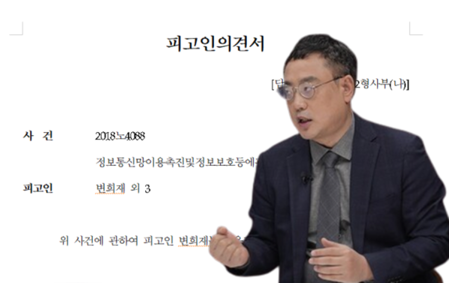
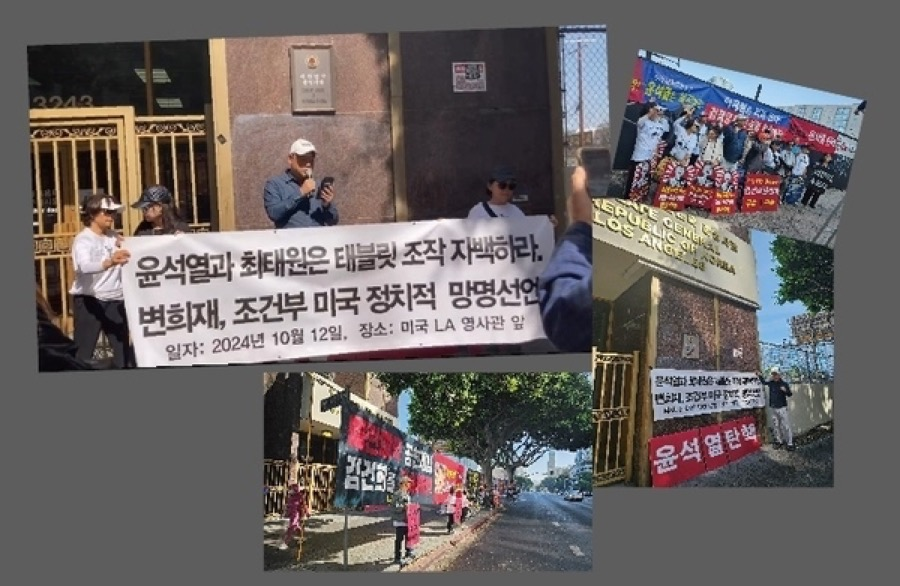
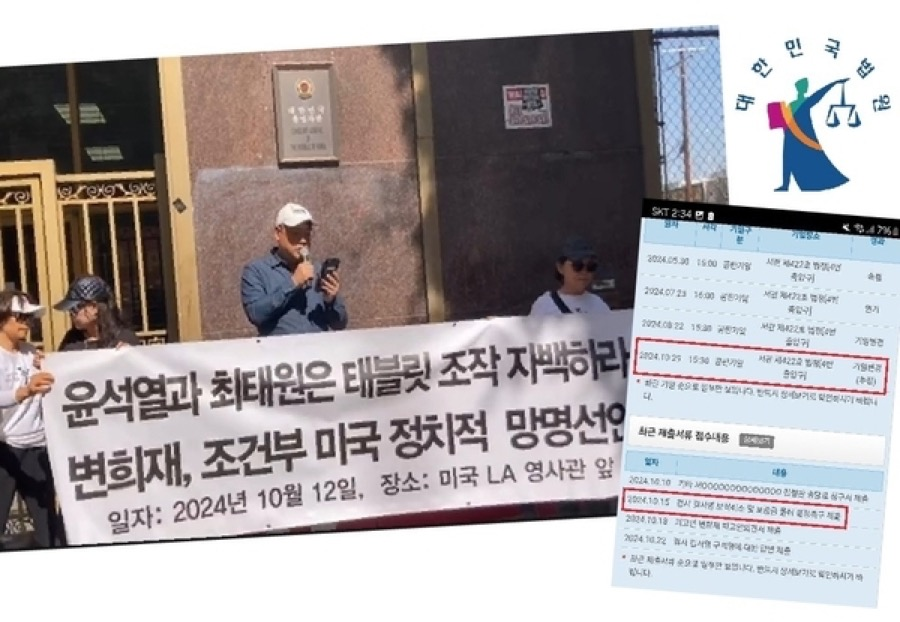
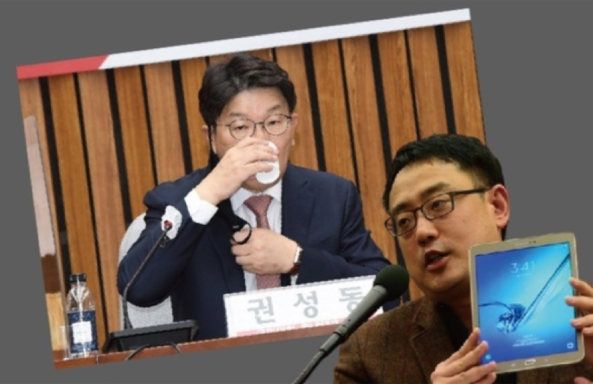
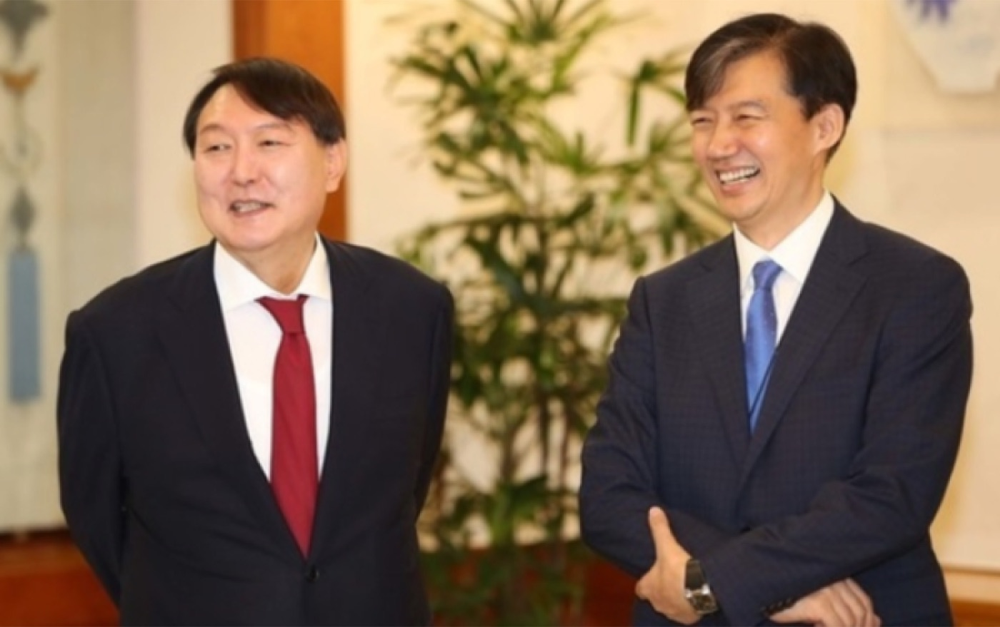
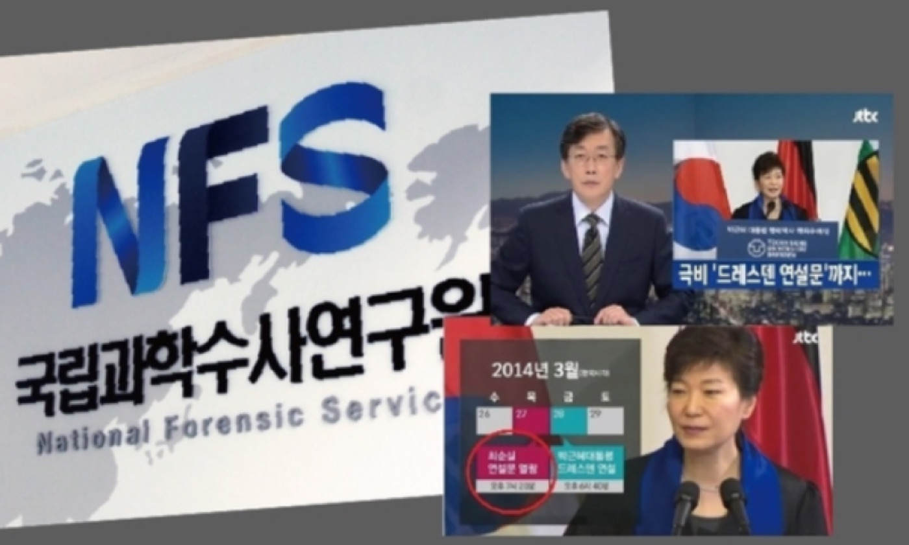
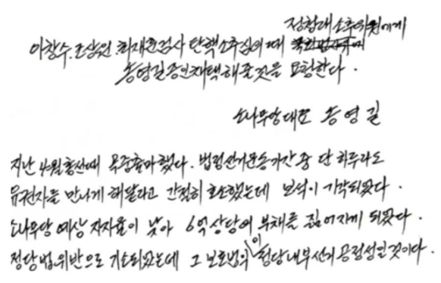

▶
▶ ▶
▶At a glance
- Assist Hwang Uiwon, former Editor-in-Chief, with the transcription, translation, and editing of investigative articles and interview scripts from Korean into English for publication and video production.
- Supported English-language coverage of contemporary Korean political and legal affairs, including the case of commentator and CEO Byun Hee-jae and his U.S. political asylum bid over censorship claims
In video
Full archive. Last updated July 2026
The content on the following pages is shared with permission from Media Watch.







In photos